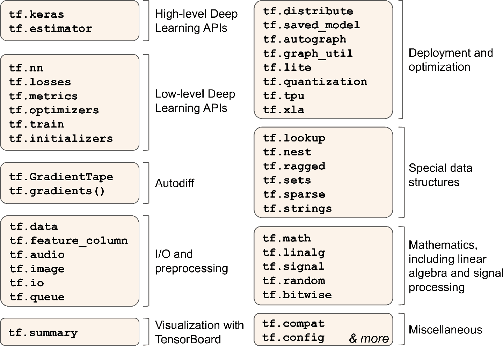
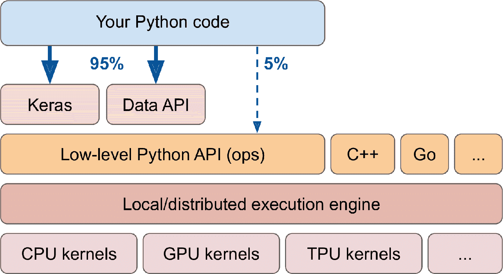
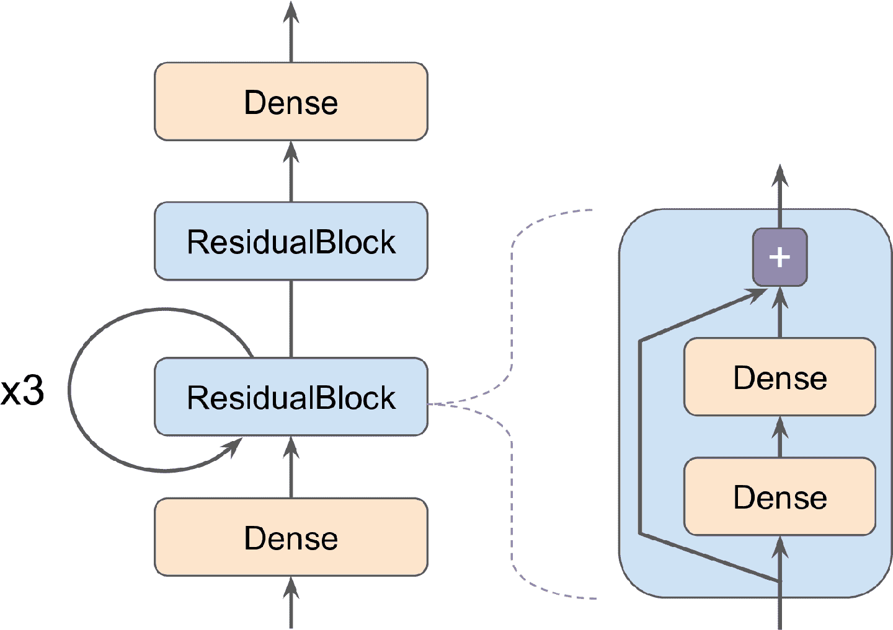
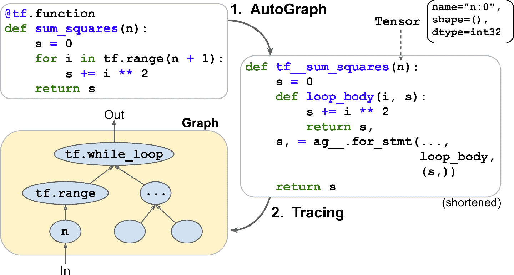

、 、
译者
@SeanCheney ：
目前为止tf.kerastf.keras就足够了tf.data
笔记
TensorFlow 2.0 ： beta （ 是 2019 年六月发布的 ） 相比前代更易使用 ， 本书第一版使用的是 TF 1 。 这一版使用的是 TF 2 ， 。
TensorFlow 速览
TensorFlow 是一个强大的数值计算库
-
TensorFlow 的核心与 NumPy 很像
， ； -
TensorFlow 支持
（ ） ； -
TensorFlow 使用了即时 JIT 编译器对计算速度和内存使用优化
。 ， （ ） ， （ ） ； -
计算图可以导出为迁移形式
， （ ） ， （ ） ； -
TensorFlow 实现了自动微分
， ， ， 。
基于上面这些特点tf.kerastf.datatf.io等等tf.imagetf.signal

图 12-1 TensorFlow 的 Python API
提示
这一章会介绍 TensorFlow API 的多个包和函数 ： 但来不及介绍全部 ， 所以读者最好自己花点时间好好看看 API ， TensorFlow 的 API 十分丰富 。 且文档详实 ， 。
TensorFlow 的低级操作都是用高效的 C++ 实现的核
TensorFlow 的架构见图 12-2tf.keras和tf.data

图 12-2 TensorFlow 的架构
TensorFlow 不仅可以运行在 Windows
TensorFlow 不只有这些库
提示
越来越多的 ML 论文都附带了实现过程 ： 一些甚至带有预训练模型 ， 可以在这里找到 。 。
最后
下面开始写代码
像 NumPy 一样使用 TensorFlow
TensorFlow 的 API 是围绕张量ndarray
张量和运算
使用tf.constant()创建张量
>>> tf.constant([[1., 2., 3.], [4., 5., 6.]]) # matrix
<tf.Tensor: id=0, shape=(2, 3), dtype=float32, numpy=
array([[1., 2., 3.],
[4., 5., 6.]], dtype=float32)>
>>> tf.constant(42) # 标量
<tf.Tensor: id=1, shape=(), dtype=int32, numpy=42>
就像ndarray一样tf.Tensor也有形状和数据类型dtype
>>> t = tf.constant([[1., 2., 3.], [4., 5., 6.]])
>>> t.shape
TensorShape([2, 3])
>>> t.dtype
tf.float32
索引和 NumPy 中很像
>>> t[:, 1:]
<tf.Tensor: id=5, shape=(2, 2), dtype=float32, numpy=
array([[2., 3.],
[5., 6.]], dtype=float32)>
>>> t[..., 1, tf.newaxis]
<tf.Tensor: id=15, shape=(2, 1), dtype=float32, numpy=
array([[2.],
[5.]], dtype=float32)>
最重要的
>>> t + 10
<tf.Tensor: id=18, shape=(2, 3), dtype=float32, numpy=
array([[11., 12., 13.],
[14., 15., 16.]], dtype=float32)>
>>> tf.square(t)
<tf.Tensor: id=20, shape=(2, 3), dtype=float32, numpy=
array([[ 1., 4., 9.],
[16., 25., 36.]], dtype=float32)>
>>> t @ tf.transpose(t)
<tf.Tensor: id=24, shape=(2, 2), dtype=float32, numpy=
array([[14., 32.],
[32., 77.]], dtype=float32)>
可以看到t + 10等同于调用tf.add(t, 10)-和*也支持@运算符是在 Python3.5 中出现的tf.matmul()
可以在 tf 中找到所有基本的数学运算tf.add()tf.multiply()tf.square()tf.exp()tf.sqrt()tf.reshape()tf.squeeze()tf.tile()tf.reduce_mean()tf.reduce_sum()tf.reduce_max()tf.math.log()等同于np.mean()np.sum()np.max()和np.log()tf.transpose(t)t.Ttf.transpose(t)所做的和 NumPy 的属性T并不完全相同t.T是数据的转置视图tf.reduce_sum()操作之所以这么命名tf.reduce_mean()也是这样tf.reduce_max()结果是确定的
笔记
许多函数和类都有假名 ： 比如 。 ， tf.add()和tf.math.add()是相同的这可以让 TensorFlow 对于最常用的操作有简洁的名字 。 同时包可以有序安置 ， 。
Keras 的低级 API
Keras API 有自己的低级 API位于 ， keras.backend包括 ， 函数 ： square()、 exp()、 sqrt()在 。 tf.keras中这些函数通常通常只是调用对应的 TensorFlow 操作 ， 如果你想写一些可以迁移到其它 Keras 实现上 。 就应该使用这些 Keras 函数 ， 但是这些函数不多 。 所以这本书里就直接使用 TensorFlow 的运算了 ， 下面是一个简单的使用了 。 keras.backend的例子简记为 ， k： >>> from tensorflow import keras >>> K = keras.backend >>> K.square(K.transpose(t)) + 10 <tf.Tensor: id=39, shape=(3, 2), dtype=float32, numpy= array([[11., 26.], [14., 35.], [19., 46.]], dtype=float32)>
张量和 NumPy
张量和 NumPy 融合地非常好
>>> a = np.array([2., 4., 5.])
>>> tf.constant(a)
<tf.Tensor: id=111, shape=(3,), dtype=float64, numpy=array([2., 4., 5.])>
>>> t.numpy() # 或 np.array(t)
array([[1., 2., 3.],
[4., 5., 6.]], dtype=float32)
>>> tf.square(a)
<tf.Tensor: id=116, shape=(3,), dtype=float64, numpy=array([4., 16., 25.])>
>>> np.square(t)
array([[ 1., 4., 9.],
[16., 25., 36.]], dtype=float32)
警告
NumPy 默认使用 64 位精度 ： TensorFlow 默认用 32 位精度 ， 这是因为 32 位精度通常对于神经网络就足够了 。 另外运行地更快 ， 使用的内存更少 ， 因此当你用 NumPy 数组创建张量时 。 一定要设置 ， dtype=tf.float32。
类型转换
类型转换对性能的影响非常大
>>> tf.constant(2.) + tf.constant(40)
Traceback[...]InvalidArgumentError[...]expected to be a float[...]
>>> tf.constant(2.) + tf.constant(40., dtype=tf.float64)
Traceback[...]InvalidArgumentError[...]expected to be a double[...]
这点可能一开始有点恼人tf.cast()
>>> t2 = tf.constant(40., dtype=tf.float64)
>>> tf.constant(2.0) + tf.cast(t2, tf.float32)
<tf.Tensor: id=136, shape=(), dtype=float32, numpy=42.0>
变量
到目前为止看到的tf.Tensor值都是不能修改的tf.Variable
>>> v = tf.Variable([[1., 2., 3.], [4., 5., 6.]])
>>> v
<tf.Variable 'Variable:0' shape=(2, 3) dtype=float32, numpy=
array([[1., 2., 3.],
[4., 5., 6.]], dtype=float32)>
tf.Variable和tf.Tensor很像assign()方法对其就地修改assign_add()assign_sub()assign()方法可以修改独立的切片scatter_update()scatter_nd_update()方法
v.assign(2 * v) # => [[2., 4., 6.], [8., 10., 12.]]
v[0, 1].assign(42) # => [[2., 42., 6.], [8., 10., 12.]]
v[:, 2].assign([0., 1.]) # => [[2., 42., 0.], [8., 10., 1.]]
v.scatter_nd_update(indices=[[0, 0], [1, 2]], updates=[100., 200.])
# => [[100., 42., 0.], [8., 10., 200.]]
笔记
在实践中 ： 很少需要手动创建变量 ， 因为 Keras 有 ， add_weight()方法可以自动来做另外 。 模型参数通常会直接通过优化器更新 ， 因此很少需要手动更新 ， 。
其它数据结构
TensorFlow 还支持其它几种数据结构Tensors and Operations部分
稀疏张量tf.SparseTensor
高效表示含有许多 0 的张量tf.sparse包含有对稀疏张量的运算
张量数组tf.TensorArray
是张量的列表
嵌套张量tf.RaggedTensor
张量列表的静态列表tf.ragged包里有嵌套张量的运算
字符串张量
类型是tf.string的常规张量caféb"caf\xc3\xa9"tf.int32类型的张量表示 Unicode 字符串[99, 97, 102, 233]tf.strings包里有字节串和 Unicode 字符串的运算tf.string是原子性的tf.int32张量
集合
表示为常规张量tf.constant([[1, 2], [3, 4]])表示两个集合{1, 2}和{3, 4}tf.sets包
队列
用来在多个步骤之间保存张量FIFOQueuePriorityQueueRandomShuffleQueuePaddingFIFOQueuetf.queue包中
有了张量
自定义模型和训练算法
先从简单又常见的任务开始
自定义损失函数
假如你想训练一个回归模型tf.keras有keras.losses.Huber的实例tf.keras没有
def huber_fn(y_true, y_pred):
error = y_true - y_pred
is_small_error = tf.abs(error) < 1
squared_loss = tf.square(error) / 2
linear_loss = tf.abs(error) - 0.5
return tf.where(is_small_error, squared_loss, linear_loss)
警告
要提高性能 ： 应该像这个例子使用向量 ， 另外 。 如果想利用 TensorFlow 的图特性 ， 则只能使用 TensorFlow 运算 ， 。
最好返回一个包含实例的张量
现在
model.compile(loss=huber_fn, optimizer="nadam")
model.fit(X_train, y_train, [...])
仅此而已huber_fn()计算损失
在保存这个模型时
保存并加载包含自定义组件的模型
因为 Keras 可以保存函数名
model = keras.models.load_model("my_model_with_a_custom_loss.h5",
custom_objects={"huber_fn": huber_fn})
对于刚刚的代码
def create_huber(threshold=1.0):
def huber_fn(y_true, y_pred):
error = y_true - y_pred
is_small_error = tf.abs(error) < threshold
squared_loss = tf.square(error) / 2
linear_loss = threshold * tf.abs(error) - threshold**2 / 2
return tf.where(is_small_error, squared_loss, linear_loss)
return huber_fn
model.compile(loss=create_huber(2.0), optimizer="nadam")
但在保存模型时threshold不能被保存Huber_fnthreshold的值
model = keras.models.load_model("my_model_with_a_custom_loss_threshold_2.h5",
custom_objects={"huber_fn": create_huber(2.0)})
要解决这个问题keras.losses.Loss类的子类get_config()方法
class HuberLoss(keras.losses.Loss):
def __init__(self, threshold=1.0, **kwargs):
self.threshold = threshold
super().__init__(**kwargs)
def call(self, y_true, y_pred):
error = y_true - y_pred
is_small_error = tf.abs(error) < self.threshold
squared_loss = tf.square(error) / 2
linear_loss = self.threshold * tf.abs(error) - self.threshold**2 / 2
return tf.where(is_small_error, squared_loss, linear_loss)
def get_config(self):
base_config = super().get_config()
return {**base_config, "threshold": self.threshold}
警告
Keras API 目前只使用子类来定义层 ： 模型 、 调回和正则器 、 如果使用子类创建其它组件 。 比如损失 （ 指标 、 初始化器或约束 、 ） 它们不能迁移到其它 Keras 实现上 ， 可能 Keras API 经过更新 。 就会支持所有组件了 ， 。
逐行看下这段代码
-
构造器接收
**kwargs， ， ： name， 、 reduction算法。 "sum_over_batch_size"， ， ， ， （ ， ） 。 "sum"和None。 -
call()方法接受标签和预测值， ， 。 -
get_config()方法返回一个字典， 。 get_config()方法， （ {**x}语法是 Python 3.5 引入的） 。
当编译模型时
model.compile(loss=HuberLoss(2.), optimizer="nadam")
保存模型时
model = keras.models.load_model("my_model_with_a_custom_loss_class.h5",
custom_objects={"HuberLoss": HuberLoss})
保存模型时get_config()方法HuberLoss类的from_config()方法Loss实现的Loss的实例**config传递给构造器
、 、 、 、
Keras 的大多数功能keras.activations.softplus()或tf.nn.softplus()keras.initializers.glorot_normal()ℓ1正则化器keras.regularizers.l1(0.01)equivalent to keras.constraints.nonneg()或tf.nn.relu()
def my_softplus(z): # return value is just tf.nn.softplus(z)
return tf.math.log(tf.exp(z) + 1.0)
def my_glorot_initializer(shape, dtype=tf.float32):
stddev = tf.sqrt(2\. / (shape[0] + shape[1]))
return tf.random.normal(shape, stddev=stddev, dtype=dtype)
def my_l1_regularizer(weights):
return tf.reduce_sum(tf.abs(0.01 * weights))
def my_positive_weights(weights): # return value is just tf.nn.relu(weights)
return tf.where(weights < 0., tf.zeros_like(weights), weights)
可以看到
layer = keras.layers.Dense(30, activation=my_softplus,
kernel_initializer=my_glorot_initializer,
kernel_regularizer=my_l1_regularizer,
kernel_constraint=my_positive_weights)
激活函数会应用到这个Dense层的输出上
如果函数有需要连同模型一起保存的超参数keras.regularizers.Regularizerkeras.constraints.Constraintkeras.initializers.Initializerkeras.layers.Layerℓ1正则类factorget_config()方法
class MyL1Regularizer(keras.regularizers.Regularizer):
def __init__(self, factor):
self.factor = factor
def __call__(self, weights):
return tf.reduce_sum(tf.abs(self.factor * weights))
def get_config(self):
return {"factor": self.factor}
注意call()方法__call__()方法
自定义指标
损失和指标的概念是不一样的
但是Huber_fn就成
model.compile(loss="mse", optimizer="nadam", metrics=[create_huber(2.0)])
对于训练中的每个批次keras.metrics.Precision所做的
>>> precision = keras.metrics.Precision()
>>> precision([0, 1, 1, 1, 0, 1, 0, 1], [1, 1, 0, 1, 0, 1, 0, 1])
<tf.Tensor: id=581729, shape=(), dtype=float32, numpy=0.8>
>>> precision([0, 1, 0, 0, 1, 0, 1, 1], [1, 0, 1, 1, 0, 0, 0, 0])
<tf.Tensor: id=581780, shape=(), dtype=float32, numpy=0.5>
在这个例子中Precision对象
任何时候result()方法获取指标的当前值variables属性reset_states()方法重置变量
>>> p.result()
<tf.Tensor: id=581794, shape=(), dtype=float32, numpy=0.5>
>>> p.variables
[<tf.Variable 'true_positives:0' [...] numpy=array([4.], dtype=float32)>,
<tf.Variable 'false_positives:0' [...] numpy=array([4.], dtype=float32)>]
>>> p.reset_states() # both variables get reset to 0.0
如果想创建一个这样的流式指标keras.metrics.Metric类的子类
class HuberMetric(keras.metrics.Metric):
def __init__(self, threshold=1.0, **kwargs):
super().__init__(**kwargs) # handles base args (e.g., dtype)
self.threshold = threshold
self.huber_fn = create_huber(threshold)
self.total = self.add_weight("total", initializer="zeros")
self.count = self.add_weight("count", initializer="zeros")
def update_state(self, y_true, y_pred, sample_weight=None):
metric = self.huber_fn(y_true, y_pred)
self.total.assign_add(tf.reduce_sum(metric))
self.count.assign_add(tf.cast(tf.size(y_true), tf.float32))
def result(self):
return self.total / self.count
def get_config(self):
base_config = super().get_config()
return {**base_config, "threshold": self.threshold}
逐行看下代码
-
构造器使用
add_weight()方法来创建用来跟踪多个批次的变量 —— 在这个例子中， （ total） （ count） 。 ， 。 tf.Variable（ ， “ ” ， ） 。 -
当将这个类的实例当做函数使用时会调用
update_state()方法（ Precision对象） 。 （ ， ） 。 -
result()方法计算并返回最终值， ， 。 ， update_state()方法先被调用， result()方法， 。 -
还实现了
get_config()方法， threshold和模型一起存储。 -
reset_states()方法默认将所有值重置为 0.0（ ） 。
笔记
Keras 能无缝处理变量持久化 ： 。
当用简单函数定义指标时HuberMetric类的唯一好处是threshold可以进行保存
创建好了流式指标
自定义层
有时候你可能想搭建一个架构
如何创建自定义层呢keras.layers.Flatten或keras.layers.ReLUkeras.layers.Lambda层
exponential_layer = keras.layers.Lambda(lambda x: tf.exp(x))
这个自定义层可以像任何其它层一样使用顺序 APIactivation=tf.expactivation=keras.activations.exponentialactivation="exponential"
你可能猜到了keras.layers.Layer类的子类
class MyDense(keras.layers.Layer):
def __init__(self, units, activation=None, **kwargs):
super().__init__(**kwargs)
self.units = units
self.activation = keras.activations.get(activation)
def build(self, batch_input_shape):
self.kernel = self.add_weight(
name="kernel", shape=[batch_input_shape[-1], self.units],
initializer="glorot_normal")
self.bias = self.add_weight(
name="bias", shape=[self.units], initializer="zeros")
super().build(batch_input_shape) # must be at the end
def call(self, X):
return self.activation(X @ self.kernel + self.bias)
def compute_output_shape(self, batch_input_shape):
return tf.TensorShape(batch_input_shape.as_list()[:-1] + [self.units])
def get_config(self):
base_config = super().get_config()
return {**base_config, "units": self.units,
"activation": keras.activations.serialize(self.activation)}
逐行看下代码
-
构造器将所有超参数作为参数
（ ， units和activation） ， ， **kwargs参数。 ， kwargs： ， input_shape、 trainable和name。 ， keras.activations.get()函数（ 、 ， "relu"、 "selu"、 "None"） ， activation参数转换为合适的激活函数。 -
build()方法通过对每个权重调用add_weight()方法， 。 ， build()方法。 ， ， build()方法， 。 ， ， （ ， "kernel"） ： 。 build()方法最后（ ） ， build()方法： （ self.built=True） 。 -
call()方法执行预想操作。 ， X和层的核的矩阵乘法， ， ， 。 -
compute_output_shape()方法只是返回了该层输出的形状。 ， ， 。 tf.keras中， tf.TensorShape类的实例， as_list()转换为 Python 列表。 -
get_config()方法和前面的自定义类很像。 keras.activations.serialize()， 。
现在MyDense层了
笔记
一般情况下 ： 可以忽略 ， compute_output_shape()方法因为 ， tf.keras能自动推断输出的形状除非层是动态的 ， 后面会看到动态层 （ ） 在其它 Keras 实现中 。 要么需要 ， compute_output_shape()方法要么默认输出形状和输入形状相同 ， 。
要创建一个有多个输入Concatenatecall()方法的参数应该是包含所有输入的元组compute_output_shape()方法的参数应该是一个包含每个输入的批次形状的元组call()方法要返回输出的列表compute_output_shape()方法要返回批次输出形状的列表
class MyMultiLayer(keras.layers.Layer):
def call(self, X):
X1, X2 = X
return [X1 + X2, X1 * X2, X1 / X2]
def compute_output_shape(self, batch_input_shape):
b1, b2 = batch_input_shape
return [b1, b1, b1] # 可能需要处理广播规则
这个层现在就可以像其它层一样使用了
如果你的层需要在训练和测试时有不同的行为Dropout 或 BatchNormalization层call()方法加上training参数keras.layers.GaussianNoise
class MyGaussianNoise(keras.layers.Layer):
def __init__(self, stddev, **kwargs):
super().__init__(**kwargs)
self.stddev = stddev
def call(self, X, training=None):
if training:
noise = tf.random.normal(tf.shape(X), stddev=self.stddev)
return X + noise
else:
return X
def compute_output_shape(self, batch_input_shape):
return batch_input_shape
上面这些就能让你创建自定义层了
自定义模型
第 10 章在讨论子类化 API 时keras.Model类的子类call()方法完成模型想做的任何事

图 12-3 自定义模型案例
输入先进入一个紧密层ResidualBlock层
class ResidualBlock(keras.layers.Layer):
def __init__(self, n_layers, n_neurons, **kwargs):
super().__init__(**kwargs)
self.hidden = [keras.layers.Dense(n_neurons, activation="elu",
kernel_initializer="he_normal")
for _ in range(n_layers)]
def call(self, inputs):
Z = inputs
for layer in self.hidden:
Z = layer(Z)
return inputs + Z
这个层稍微有点特殊hidden属性包含可追踪对象
class ResidualRegressor(keras.Model):
def __init__(self, output_dim, **kwargs):
super().__init__(**kwargs)
self.hidden1 = keras.layers.Dense(30, activation="elu",
kernel_initializer="he_normal")
self.block1 = ResidualBlock(2, 30)
self.block2 = ResidualBlock(2, 30)
self.out = keras.layers.Dense(output_dim)
def call(self, inputs):
Z = self.hidden1(inputs)
for _ in range(1 + 3):
Z = self.block1(Z)
Z = self.block2(Z)
return self.out(Z)
在构造器中创建层call()方法中使用save()方法保存模型keras.models.load_model()方法加载模型ResidualBlock类和ResidualRegressor类中实现get_config()方法save_weights()方法和load_weights()方法保存和加载权重
Model类是Layer类的子类compile()fit()evaluate() 和predict()get_layers()方法save()方法keras.models.load_model()和keras.models.clone_model()
提示
如果模型提供的功能比层多 ： 为什么不讲每一个层定义为模型呢 ， 技术上当然可以这么做 ？ 但对内部组件和模型 ， 即 （ 层或可重复使用的层块 ， 加以区别 ） 可以更加清晰 ， 前者应该是 。 Layer类的子类后者应该是 ， Model类的子类。
掌握了上面的方法
基于模型内部的损失和指标
前面的自定义损失和指标都是基于标签和预测
要基于模型内部自定义损失add_loss()方法
class ReconstructingRegressor(keras.Model):
def __init__(self, output_dim, **kwargs):
super().__init__(**kwargs)
self.hidden = [keras.layers.Dense(30, activation="selu",
kernel_initializer="lecun_normal")
for _ in range(5)]
self.out = keras.layers.Dense(output_dim)
def build(self, batch_input_shape):
n_inputs = batch_input_shape[-1]
self.reconstruct = keras.layers.Dense(n_inputs)
super().build(batch_input_shape)
def call(self, inputs):
Z = inputs
for layer in self.hidden:
Z = layer(Z)
reconstruction = self.reconstruct(Z)
recon_loss = tf.reduce_mean(tf.square(reconstruction - inputs))
self.add_loss(0.05 * recon_loss)
return self.out(Z)
逐行看下代码
-
构造器搭建了一个有五个紧密层和一个紧密输出层的 DNN
。 -
build()方法创建了另一个紧密层， 。 build()方法的原因， ， build()方法之前是不知道的。 -
call()方法处理所有五个隐藏层的输入， ， 。 -
call()方法然后计算重建损失（ ） ， add_loss()方法， 。 ， （ ） ， ， 。 -
最后
， call()方法将隐藏层的输出传递给输出层， 。
相似的keras.metrics.Mean对象call()方法中调用它recon_lossadd_metric()方法
Epoch 1/5
11610/11610 [=============] [...] loss: 4.3092 - reconstruction_error: 1.7360
Epoch 2/5
11610/11610 [=============] [...] loss: 1.1232 - reconstruction_error: 0.8964
[...]
在超过 99% 的情况中
使用自动微分计算梯度
要搞懂如何使用自动微分自动计算梯度
def f(w1, w2):
return 3 * w1 ** 2 + 2 * w1 * w2
如果你会微积分w1的偏导是6 * w1 + 2 * w2w2的偏导是2 * w1(w1, w2) = (5, 3)(36, 10)
>>> w1, w2 = 5, 3
>>> eps = 1e-6
>>> (f(w1 + eps, w2) - f(w1, w2)) / eps
36.000003007075065
>>> (f(w1, w2 + eps) - f(w1, w2)) / eps
10.000000003174137
这种方法很容易实现f()f(w1, w2)
w1, w2 = tf.Variable(5.), tf.Variable(3.)
with tf.GradientTape() as tape:
z = f(w1, w2)
gradients = tape.gradient(z, [w1, w2])
先定义了两个变量w1 和 w2tf.GradientTape上下文z关于两个变量[w1, w2]的梯度
>>> gradients
[<tf.Tensor: id=828234, shape=(), dtype=float32, numpy=36.0>,
<tf.Tensor: id=828229, shape=(), dtype=float32, numpy=10.0>]
很好gradient()方法只逆向算了一次
提示
为了节省内存 ： 只将严格的最小值放在 ， tf.GradientTape()中另外 。 通过 ， 在 tf.GradientTape()中创建一个tape.stop_recording()来暂停记录。
当调用记录器的gradient()方法时gradient()就会报错
with tf.GradientTape() as tape:
z = f(w1, w2)
dz_dw1 = tape.gradient(z, w1) # => tensor 36.0
dz_dw2 = tape.gradient(z, w2) # 运行时错误
如果需要调用gradient()一次以上
with tf.GradientTape(persistent=True) as tape:
z = f(w1, w2)
dz_dw1 = tape.gradient(z, w1) # => tensor 36.0
dz_dw2 = tape.gradient(z, w2) # => tensor 10.0, works fine now!
del tape
默认情况下z的梯度z和变量没关系None
c1, c2 = tf.constant(5.), tf.constant(3.)
with tf.GradientTape() as tape:
z = f(c1, c2)
gradients = tape.gradient(z, [c1, c2]) # returns [None, None]
但是
with tf.GradientTape() as tape:
tape.watch(c1)
tape.watch(c2)
z = f(c1, c2)
gradients = tape.gradient(z, [c1, c2]) # returns [tensor 36., tensor 10.]
在某些情况下
大多数时候jabobian()方法
某些情况下tf.stop_gradient()函数tf.identity()
def f(w1, w2):
return 3 * w1 ** 2 + tf.stop_gradient(2 * w1 * w2)
with tf.GradientTape() as tape:
z = f(w1, w2) # same result as without stop_gradient()
gradients = tape.gradient(z, [w1, w2]) # => returns [tensor 30., None]
最后my_softplus()函数的梯度NaN
>>> x = tf.Variable([100.])
>>> with tf.GradientTape() as tape:
... z = my_softplus(x)
...
>>> tape.gradient(z, [x])
<tf.Tensor: [...] numpy=array([nan], dtype=float32)>
这是因为使用自动微分计算这个函数的梯度NaN1 / (1 + 1 / exp(x))@tf.custom_gradient计算my_softplus()的梯度
@tf.custom_gradient
def my_better_softplus(z):
exp = tf.exp(z)
def my_softplus_gradients(grad):
return grad / (1 + 1 / exp)
return tf.math.log(exp + 1), my_softplus_gradients
计算好了my_better_softplus()的梯度tf.where()返回输入
祝贺你
自定义训练循环
在某些特殊情况下fit()方法可能不够灵活fit()方法智能使用一个优化器
你可能还想写自定义的训练循环fit()方法的细节并不确定
提示
除非真的需要自定义 ： 最好还是使用 ， fit()方法而不是自定义训练循环 ， 特别是当你是在一个团队之中时 ， 。
首先
l2_reg = keras.regularizers.l2(0.05)
model = keras.models.Sequential([
keras.layers.Dense(30, activation="elu", kernel_initializer="he_normal",
kernel_regularizer=l2_reg),
keras.layers.Dense(1, kernel_regularizer=l2_reg)
])
接着
def random_batch(X, y, batch_size=32):
idx = np.random.randint(len(X), size=batch_size)
return X[idx], y[idx]
再定义一个可以展示训练状态的函数Mean指标计算
def print_status_bar(iteration, total, loss, metrics=None):
metrics = " - ".join(["{}: {:.4f}".format(m.name, m.result())
for m in [loss] + (metrics or [])])
end = "" if iteration < total else "\n"
print("\r{}/{} - ".format(iteration, total) + metrics,
end=end)
这段代码不难{:.4f}不熟\rend=""连用print_status_bar()函数包括进度条tqdm库
有了这些准备
n_epochs = 5
batch_size = 32
n_steps = len(X_train) // batch_size
optimizer = keras.optimizers.Nadam(lr=0.01)
loss_fn = keras.losses.mean_squared_error
mean_loss = keras.metrics.Mean()
metrics = [keras.metrics.MeanAbsoluteError()]
可以搭建自定义循环了
for epoch in range(1, n_epochs + 1):
print("Epoch {}/{}".format(epoch, n_epochs))
for step in range(1, n_steps + 1):
X_batch, y_batch = random_batch(X_train_scaled, y_train)
with tf.GradientTape() as tape:
y_pred = model(X_batch, training=True)
main_loss = tf.reduce_mean(loss_fn(y_batch, y_pred))
loss = tf.add_n([main_loss] + model.losses)
gradients = tape.gradient(loss, model.trainable_variables)
optimizer.apply_gradients(zip(gradients, model.trainable_variables))
mean_loss(loss)
for metric in metrics:
metric(y_batch, y_pred)
print_status_bar(step * batch_size, len(y_train), mean_loss, metrics)
print_status_bar(len(y_train), len(y_train), mean_loss, metrics)
for metric in [mean_loss] + metrics:
metric.reset_states()
逐行看下代码
-
创建了两个嵌套循环
： ， 。 -
然后从训练集随机批次采样
。 -
在
tf.GradientTape()内部， （ ） ， ： （ ， ） 。 mean_squared_error()函数给每个实例返回一个损失， tf.reduce_mean()计算平均值（ ， ） 。 ， （ tf.add_n()， ） 。 -
接着
， （ ！ ） ， 。 -
然后
， （ ） ， 。 -
在每个周期结束后
， ， ， ， 。
如果设定优化器的clipnorm或clipvalue超参数apply_gradients()方法之前
如果你对模型添加了权重约束kernel_constraint或bias_constraintapply_gradients()之后
for variable in model.variables:
if variable.constraint is not None:
variable.assign(variable.constraint(variable))
最重要的BatchNormalization或Dropouttraining=True
可以看到
现在你知道如何自定义模型中的任何部分了
TensorFlow 的函数和图
在 TensorFlow 1 中
def cube(x):
return x ** 3
可以用一个值调用这个函数
>>> cube(2)
8
>>> cube(tf.constant(2.0))
<tf.Tensor: id=18634148, shape=(), dtype=float32, numpy=8.0>
现在tf.function()将这个 Python 函数变为 TensorFlow 函数
>>> tf_cube = tf.function(cube)
>>> tf_cube
<tensorflow.python.eager.def_function.Function at 0x1546fc080>
可以像原生 Python 函数一样使用这个 TF 函数
>>> tf_cube(2)
<tf.Tensor: id=18634201, shape=(), dtype=int32, numpy=8>
>>> tf_cube(tf.constant(2.0))
<tf.Tensor: id=18634211, shape=(), dtype=float32, numpy=8.0>
tf.function()在底层分析了cube()函数的计算tf.function作为装饰器
@tf.function
def tf_cube(x):
return x ** 3
原生的 Python 函数通过 TF 函数的python_function属性仍然可用
>>> tf_cube.python_function(2)
8
TensorFlow 优化了计算图1 + 2会替换为 3
另外tf.function()
提示
创建自定义层或模型时 ： 设置 ， dynamic=True可以让 Keras 不转化你的 Python 函数 ， 另外 。 当调用模型的 ， compile()方法时可以设置 ， run_eagerly=True。
默认时tf_cube(tf.constant(10))int32张量tf_cube(tf.constant(20))tf_cube(tf.constant([10, 20]))int32[2]的新计算图tf_cube(10)和tf_cube(20)会产生两个计算图
警告
如果用多个不同的 Python 数值调用 TF 函数 ： 就会产生多个计算图 ， 这样会减慢程勋 ， 使用很多的内存 ， 必须删掉 TF 函数才能释放 （ ） Python 的值应该复赋值给尽量重复的参数 。 比如超参数 ， 每层有多少个神经元 ， 这可以让 TensorFlow 更好的优化模型中的变量 。 。
自动图和跟踪
TensorFlow 是如何生成计算图的呢for循环while循环if条件breakcontinuereturn__add__()和__mul__()这样的魔术方法__while__()或__if__()这样的魔术方法tf.while_loop()while循环tf.cond()if判断sum_squares()的源码tf__sum_squares()for循环被替换成了loop_body()for循环for_stmt()tf.while_loop()

图 12-4 TensorFlow 是如何使用自动图和跟踪生成计算图的
然后sum_squares(tf.constant(10))tf__sum_squares()int32[]tensor(s)tf__sum_squares()函数被调用
提示
想看生成出来的函数源码的话 ： 可以调用 ， tf.autograph.to_code(sum_squares.python_function)源码不美观 。 但可以用来调试 ， 。
TF 函数规则
大多数时候@tf.function装饰
- 如果调用任何外部库
， ， ， ， 。 ， （ 、 、 、 ， ） 。 ， tf.reduce_sum()而不是np.sum()， tf.sort()而不是内置的sorted()， 。 ：
-
如果定义了一个 TF 函数
f(x)， np.random.rand()， ， ， f(tf.constant(2.))和f(tf.constant(3.))会返回同样的随机数， f(tf.constant([2., 3.]))会返回不同的数。 np.random.rand()替换为tf.random.uniform([])， ， 。 -
如果你的非 TensorFlow 代码有副作用
（ ， ） ， ， ， 。 -
你可以在
tf.py_function()运算中包装任意的 Python 代码， ， 。 ， （ ） 。
-
你可以调用其它 Python 函数或 TF 函数
， ， 。 ， @tf.function装饰。 -
如果函数创建了一个 TensorFlow 变量
（ ， ） ， ， 。 ， （ build()方法中） 。 ， assign()方法， =。 -
Python 的源码可以被 TensorFlow 使用
。 （ ， ， ， *.pyc） ， 。 -
TensorFlow 只能捕获迭代张量或数据集的
for循环。 for i in tf.range(x)， for i in range(x)， ， 。 （ for循环使用创建计算图的， ， ） 。 -
出于性能原因
， ， 。
总结一下tf.keras中的几乎每个组件
下一章会学习如何使用 TensorFlow 高效加载和预处理数据
练习
-
如何用一句话描述 TensorFlow
？ ？ ？ -
TensorFlow 是 NumPy 的简单替换吗
？ ？ -
tf.range(10)和tf.constant(np.arange(10))能拿到相同的结果吗？ -
列举出除了常规张量之外
， ？ -
可以通过函数或创建
keras.losses.Loss的子类来自定义损失函数。 ？ -
相似的
， keras.metrics.Metric的子类。 ？ -
什么时候应该创建自定义层
， ？ -
什么时候需要创建自定义的训练循环
？ -
自定义 Keras 组件可以包含任意 Python 代码吗
， ？ -
如果想让一个函数可以转换为 TF 函数
， ？ -
什么时候需要创建一个动态 Keras 模型
？ ？ ？ -
实现一个具有层归一化的自定义层
（ ） ：
a. build()方法要定义两个可训练权重α和βinput_shape[-1:]tf.float32α用 1 初始化β用 0 初始化
b. call()方法要计算每个实例的特征的平均值μ和标准差σtf.nn.moments(inputs, axes=-1, keepdims=True)μ和方差σ^2α⊗(X - μ)/(σ + ε) + β⊗表示元素级别惩罚ε是平滑项
c. 确保自定义层的输出和keras.layers.LayerNormalization层的输出一致
- 训练一个自定义训练循环
， 。
a. 展示周期
b. 深层和浅层使用不同的优化器
参考答案见附录 A